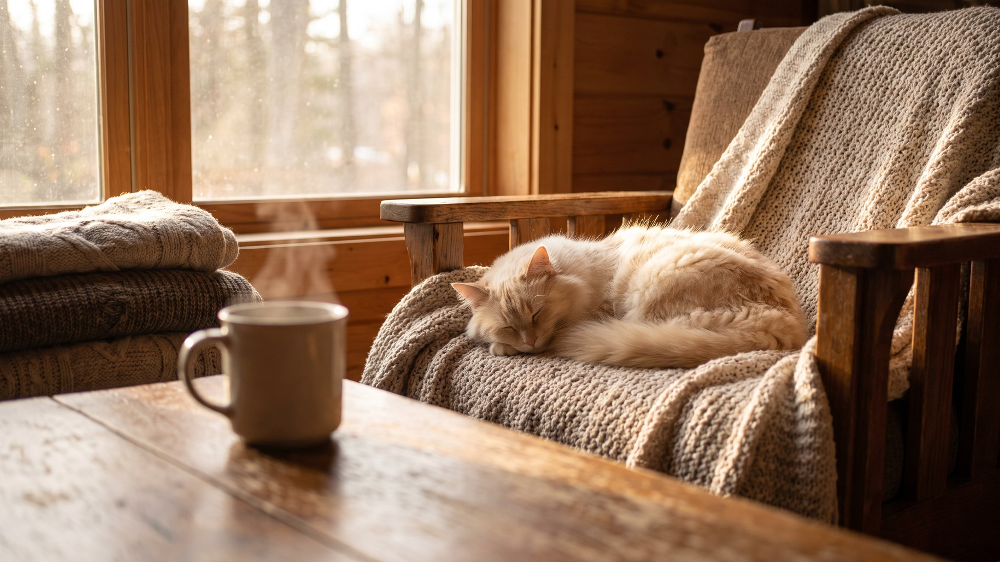

Опасность для кошки представляют не только сладости со стола: луковый порошок может оказаться в готовом блюде, а изюм в выпечке. Проще заранее ограничить доступ к такой еде и держать подходящее угощение отдельно. Ниже список продуктов, безопасные замены с правилом 10% рациона и чек-лист кухни.
🐾 Не уверены, что рацион подходит?
Напишите в AnimaLife, чем кормите, — приложение покажет, чего не хватает, и рассчитает порцию под вес, возраст и активность. Бесплатно.
Проверить рацион → Проверить в MAX →
У вас iPhone? AnimaLife есть в App Store
У многих взрослых кошек молоко ухудшает пищеварение. Для угощения лучше выбрать продукт, который питомец уже переносит, чем проверять реакцию на новый напиток.
Все лакомства вместе должны занимать до 10% суточной калорийности рациона. Основу оставляют полнорационным кормом. Если калории не рассчитаны, предлагайте немного угощения и учитывайте его в общем объёме еды.
Вводите один новый продукт за раз. Так проще заметить, что именно кошка переносит. Кусочки мяса делайте маленькими, чтобы питомцу было удобно их разжевать. Домашние добавки не должны вытеснять основной корм.
Держите кошачье лакомство в доступном для людей месте. Тогда просьба питомца о еде проще решается подходящей альтернативой без делёжки человеческого ужина.
Если кошка съела опасный продукт, своевременно свяжитесь с ветеринаром, не дожидаясь изменений в поведении. Сообщите, что именно она съела, сколько примерно и когда это произошло. Сохраните упаковку или сфотографируйте состав, чтобы ответить на вопросы врача.
Домашние манипуляции не проводите. Действуйте по указанию специалиста, который оценит продукт, количество и состояние кошки.
🐾 Соберите рацион под свою кошку
AnimaLife учитывает породу, возраст, вес и образ жизни и подсказывает, сколько и чем кормить. Плюс напоминания о кормлении и контроль веса.
Собрать рацион → Собрать в MAX →
У вас iPhone? AnimaLife есть в App Store
🐾 Понравился разбор?
Подпишитесь на канал — каждый день разбираем по одному тревожному симптому у кошек и собак: что в пределах нормы, а когда пора к врачу. Подпишитесь, чтобы не пропустить разбор, который может спасти здоровье вашего питомца.
Материал носит информационный характер и не заменяет очную консультацию ветеринара.